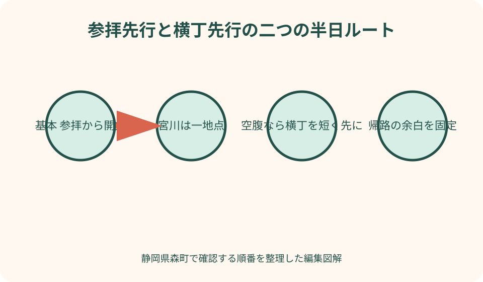
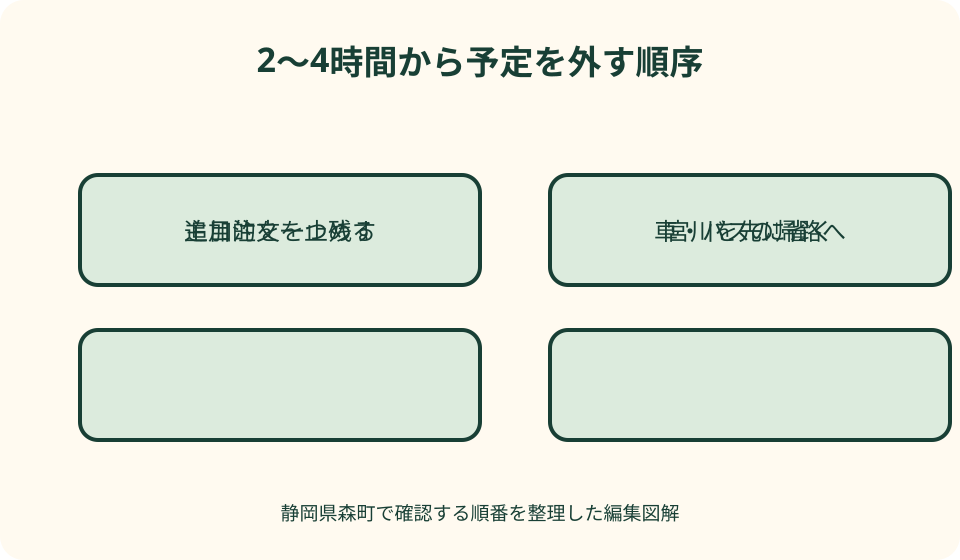

小國神社・ことまち横丁｜最終確認 2026-08-10
静岡県森町・小國神社とことまち横丁の半日コース｜2〜4時間の組み方
小國神社とことまち横丁は同じ森町一宮3956-1に公式所在地があり、半日で組み合わせやすい一方、参拝、宮川、御朱印、食事をすべて急いで回る場所ではありません。本記事の2〜4時間は公式が示す標準所要ではなく、駐車位置やバス待ち、参拝、休憩、注文待ちを吸収する編集上の幅です。基本は神域へ先に進み、参拝後に宮川と横丁を加えます。ただし空腹、御朱印の受付確認、帰りのバス、天候によって逆順も使えます。最初に主目的を一つ決め、削る順番まで持って出かけます。

編集イラスト半日の主目的を参拝・食事・季節の一つに絞る
出発前に、拝殿での参拝、御朱印、宮川の季節景観、横丁での食事のうち、外したくないものを一つ決めます。主目的が複数あると、駐車や注文に遅れが出た時に全行程を急ぐことになります。
通常の参拝が中心なら、境内へ先に進む順が分かりやすいです。空腹を整えることが中心なら、横丁で食事を短く取り、その後に参拝します。紅葉や花の観賞が中心なら、最新の見頃案内と混雑を確認し、食事を持帰りへ変えます。
御朱印を希望する人は、拝殿へお参りすることと授与の手続きを分けません。受付方法や時間を公式で確認し、参拝を先に行う基本を守ります。書置きか直書きかなど、過去の情報から当日の形式を決めつけません。
同行者にも主目的を共有します。食事を楽しみたい人と写真を撮りたい人が別々に歩き始めると、合流だけで時間を使います。集合地点と帰る時刻を先に決め、電話がつながらない場合も同じ場所へ戻れるようにします。
本記事は筆者が同じ日に全行程を実測した記録ではありません。2026年8月10日に確認した神社、横丁、森町の公式情報を基に、順番と判断材料を編集しています。所要や営業を保証するものではありません。
2〜4時間は公式所要でなく変更を吸収する枠
2時間枠は、参拝と横丁での一品または短い休憩を中心にします。駐車位置が遠い、御朱印の待ちがある、店が混む場合は、宮川散策と買い回りを外します。到着から出発まで120分で必ず終わるという意味ではありません。
3時間枠では、参拝に加えて宮川の一部、御朱印、食事のうち一つを丁寧に選びます。三つとも追加すると、注文待ちやお手洗いの時間がなくなります。同行者が疲れやすい日は、増えた一時間を休憩へ使います。
4時間枠は、参拝、宮川、横丁を組みやすい幅ですが、紅葉期や正月の道路混雑を解消する数字ではありません。駐車待ち、交通規制、店の列が長ければ、半日を使っても一部を次回へ回します。
時間表へ分刻みの到着を置かず、各場面の終了条件を書きます。参拝が終わった、宮川は一か所見た、食事は一品受け取った、土産は一店で選んだ、という完了条件なら遅れに合わせて次を省けます。
帰宅時刻に制約がある場合は、現地を出る時刻から逆算します。車なら周辺道路を抜ける余白、バスなら停留所へ戻る余白を先に確保します。余った時間だけを宮川や買い物へ渡すのが安全です。
基本順は参拝から宮川、最後に横丁
空腹や天候に問題がなければ、駐車場またはバス停から境内へ進み、拝殿で参拝します。買い物袋や食べ物を先に増やさず、神域での目的を整えてから自然や門前の時間へ移る順です。
参拝後、体力と路面を見て宮川沿いの散策を加えます。小國神社公式は、宮川を本宮山麓から境内へ流れる清流とし、川沿いで桜や紅葉を楽しめると案内しています。散策は参拝の必須動線ではありません。
宮川では、見たい地点を一つ選び、奥まで行くことを目標にしません。雨後の増水、落葉、濡れた石、暑さがあれば、橋や安全な通路から眺めて戻ります。水へ入れる場所とは断定せず、現地表示に従います。
横丁へ着いたら、まず当日営業している店と休憩席を見ます。食事、甘味、茶土産を一度に買わず、空腹なら主食、疲労なら座って飲める物、帰宅前なら持帰りの順で一つを選びます。
この順の利点は、横丁の売切れや列があっても参拝を完了していることです。店が目的の人には物足りない場合があるため、限定商品や食事を外したくない日は逆順の条件を使います。
横丁を先にするのは空腹・受付・帰りの便が条件
昼食時刻を過ぎて到着し、同行者の空腹が強い場合は、横丁で少量を先に取ります。満腹になるまで店を回らず、参拝中に負担にならない一品と水分で整え、容器とごみを片付けてから境内へ向かいます。
幼児、高齢者、服薬に食事が必要な人がいる時も、横丁先行を検討できます。ただし席、材料、提供時間は保証されません。食べられる物がない場合に備え、別の食事場所または持参食の扱いを事前に考えます。
横丁で希望商品が早く終わるという当日案内がある場合は、購入だけを先に済ませる方法があります。熱に弱い物や要冷蔵品を長時間持ち歩かず、保存方法と預かり可否を店へ確認します。預かりを当然とは考えません。
公共交通で帰りの便が限られ、参拝後では横丁へ寄る余裕がない場合、短い買い物を到着直後へ置けます。買い物の終了時刻を決め、列が長ければ商品を諦めて参拝へ進みます。
逆順でも、参拝は余った時間に行う予定へ落としません。食事または買い物へ上限を置き、参拝開始の締切を家族で決めます。その時刻を越えたら追加注文を止め、宮川は省きます。

御朱印は参拝と受付確認を同じ時間枠へ入れる
御朱印を半日コースへ加える場合、授与所へ着くだけの時間ではなく、参拝、受付確認、待ち、受取までを一つの予定にします。神社公式のお知らせと御朱印案内を訪問日に読み、当日の掲示を優先します。
受付時間、初穂料、帳面への記帳方法は本記事へ固定しません。季節や祭典、混雑で扱いが変わる可能性があります。過去の画像や投稿を見せて同じ対応を求めず、職員の案内に従います。
御朱印帳を持つ人は、名前を書いた袋へ入れ、雨や飲食物から守ります。横丁の食事容器と同じ袋にせず、受取後に内容を確認してからしまいます。忘れ物を防ぐため、移動前に家族で持ち物を確認します。
待ちが長い時に、同行者だけを宮川や横丁へ行かせるなら、合流地点と時刻を決めます。受付番号や呼出しがある場合は離れてよい範囲を尋ね、聞き逃す距離へ移動しません。
御朱印を受けられない日や時間でも、参拝の意味が失われるわけではありません。拝殿でのお参りを終え、次回の確認先を記録します。非公式な転売品を半日コースの代案にはしません。
食事は店名より提供待ちと帰路で選ぶ
ことまち横丁公式には、茶、カフェ、菓子、麺類など複数の店が掲載されています。半日では店を全部比較せず、食事、すぐ食べる甘味、持帰り土産の役割から一つを優先します。
列へ入る前に、営業中か、売切れか、注文終了が近くないか、提供まで待てるかを確認します。公式掲載の商品でも当日必ず買えるとは限りません。第一候補の品名ではなく、温かい食事、短い休憩など目的で代案を作ります。
参拝前の食事は、汁やたれを衣服へこぼさず、食後に手を整えられる量にします。食べ歩きながら参道へ進まず、指定された場所で座って食べ、容器を処理してから移動します。
参拝後なら甘味や茶をゆっくり選びやすい一方、閉店や売切れの可能性があります。外したくない商品がある人は、出発前に最新案内を確認し、電話で確認が必要か公式の問い合わせ先を使います。
土産は帰宅までの温度、重さ、公共交通での持運びを考えます。宮川散策を残しているなら先に買い込まず、最後へ回します。発送できる商品かは店へ尋ね、すべてが同じ条件で送れると推測しません。
季節は見頃より混雑と足元を予定へ反映する
神社公式の自然案内には、宮川沿いの桜や紅葉、西参道の草木、花菖蒲、梅園が掲載されています。見頃は気候で動くため、暦だけで訪問日を決めず、公式の季節の便りを直前に確認します。
春は花を見ながら歩く人が増える可能性を考え、撮影場所で通路を塞ぎません。雨上がりは花だけでなく足元を見て、歩行に不安のある同行者がいれば宮川を短縮します。
初夏の花菖蒲は、開園、料金、見頃を訪問年の公式案内へ戻って確認します。半日コースへ自動的に含めず、観賞を主目的にする日は横丁の食事または宮川の別区間を省きます。
紅葉期は、神社公式が周辺の交通規制を行う場合があると案内しています。写真で見る通常時の到着時間に頼らず、駐車やバスの遅れを前提に、参拝だけでも完了とします。
冬の正月時期は、通常の半日モデルをそのまま使いません。祭典、参拝者、交通の案内を読み、横丁の営業も別に確認します。混雑を避ける目的で非公式の細道へ入らず、現地誘導に従います。
車は駐車位置を半日開始地点として記録する
小國神社公式は無料駐車場約700台を案内していますが、常に正面近くへ停められるという意味ではありません。利用できない区画や繁忙期だけ開く区画も示されるため、入口表示と誘導員の案内を確認します。
駐車したら、区画番号、近くの目印、門前までの経路を写真またはメモに残します。散策後に別の出口へ出ると、車の場所を探す時間が増えます。同行者全員が同じ帰着地点を知るようにします。
到着時刻を半日の開始とせず、車を安全に停め、お手洗いを確認し、全員の準備が整った時点から予定を見ます。遠い区画なら宮川の時間を削り、歩行分を休憩へ回します。
遠州森町スマートICなどからの所要は、公式が示す平常時の目安として扱います。道路工事、規制、駐車待ちを含む保証ではありません。カーナビの近道より公式案内看板と当日の誘導を優先します。
帰る前には、運転者が休めたか、土産が日射を受けないか、燃料に余裕があるかを確認します。疲労があれば、もう一店寄る予定を外します。駐車場から出る列も半日の外側へ追い出さず、帰宅予定に含めます。
バスは帰りの便から参拝開始を逆算する
小國神社公式は、JR袋井駅や天竜浜名湖鉄道遠州森駅方面から路線バスで参拝できる案内を掲載しています。一方で運行日ごとに本数が異なるため、まず帰りの運行日と便を確認します。
時刻を記事へ書き写すと変更時に誤案内となるため、本記事では固定しません。運行カレンダー、最新時刻表、乗り場、支払方法を運行元と神社の公式ページで確認し、画面保存または紙へ控えます。
到着後、帰りの停留所を確認してから境内へ進みます。似た案内板や臨時乗り場がある場合は職員へ尋ねます。発車直前に横丁から走って戻る予定は立てません。
バスの発車前に少なくとも一つの余白を置きます。食事の受取が遅れたら宮川を外し、御朱印待ちが長ければ横丁の買い物を外します。未受取の商品がある状態で停留所へ向かわないよう、注文前に時間を見ます。
便に乗れなかった場合の代替交通も出発前に調べます。タクシーがすぐ来る、徒歩で駅へ簡単に戻れるとは決めつけません。森町の公共交通案内と運行事業者の連絡先を持ち、無理な徒歩移動を避けます。
雨天・売切れ・疲労では主目的だけ残す
雨天では、傘を差して宮川を歩けるかではなく、濡れた路面を同行者全員が安全に戻れるかを基準にします。参拝を短く行い、宮川は橋や参道から見るだけにし、横丁で一度休んで帰る形へ変えます。
横丁の第一候補が売り切れていたら、品名ではなく目的を残します。昼食なら当日提供できる別の主食、休憩なら座って取れる飲み物、土産なら未開封で持帰れる品を尋ねます。代案がなければ買わずに終えます。
同行者の疲れは、歩数より表情、会話、足取りで見ます。宮川を歩き始めた後でも戻り、横丁へ寄らず車や停留所へ向かえます。休憩を取って元気に見えても、予定を元へ戻す必要はありません。
御朱印受付が難しい場合は、参拝だけを行います。食事待ちが長い場合は、密封土産か別日の訪問へ変えます。複数の問題が重なった日は、参拝、買い物、散策を一つずつ残すのではなく、最優先一つだけにします。
撤退を失敗と呼ばないことが、半日コースの要点です。公式情報を確認しても当日の状態は変わります。無理に帳尻を合わせず、次回に確認したい場所と季節を記録して、安全に帰ることを完了条件にします。

良い点：同じ門前で予定を足し引きしやすい
小國神社とことまち横丁は、公式上同じ所在地で案内されています。長い車移動を挟まず、参拝の後に食事や土産を加える候補になる点は半日向きです。ただし駐車区画からの歩行距離は別に確認します。
神社には拝殿だけでなく、宮川、西参道、御神木など公式に紹介される自然があります。一つを選んで参拝へ加えられるため、季節や同行者に合わせやすいです。すべてを巡る必要はありません。
横丁には異なる役割の店舗が公式掲載され、食事、甘味、茶、持帰り品を選べます。売切れがあっても目的を変えずに商品を替えられる可能性があります。営業と材料は当日確認が条件です。
車と公共交通の両方に公式案内があるため、運転者、人数、荷物に合わせて選べます。車は駐車待ち、バスは運行日と帰りの便という別々の制約があり、どちらが常に早いとは決められません。
予定を一か所周辺へ集めることで、家族が別行動になりにくい利点もあります。参拝、休憩、買い物の合流地点を決めやすく、疲れた人だけが横丁で待つ場合も、利用できる席を現地確認して判断できます。
注文したい点：半日判断に必要な当日情報をつなげたい
神社の祭典、御朱印、季節の便り、駐車場、横丁の営業、バス運行を、訪問日から一度に確認できる案内があると半日を組みやすくなります。各ページの情報を統合する際は、更新日と確認先を明示したいところです。
境内図には、参拝、宮川の短い見学、横丁、停留所、主要駐車区画をつなぐ距離と路面情報があると便利です。一律の所要時間ではなく、雨天や混雑時に省ける区間を示す方が実用的です。
御朱印や横丁の注文について、当日の待ち時間を保証する必要はありません。受付中か、売切れか、列がどこから始まるかを現地で分かりやすく表示すれば、参拝者が半日の残り時間を判断できます。
公共交通では、運行日カレンダーと帰りの便へスマートフォンから迷わず進める導線が重要です。停留所にも最新ページへの案内を置き、臨時運行や乗り場変更がある日は現地表示と同じ内容にそろえたいです。
季節情報には、見頃だけでなく、混雑、足元、交通規制、横丁へ寄る時の注意を一緒に示せると助かります。魅力の紹介と安全な撤退判断が同じページにあれば、全部を急いで回る人を減らせます。
代案・結論：参拝を残し追加予定を一つずつ外す
前日は、参拝案内、御朱印を希望するなら最新受付、自然の状態、横丁の営業、交通を確認します。2〜4時間から使える幅を決め、主目的、帰る時刻、省く順を同行者へ共有します。
車なら駐車位置、バスなら帰りの停留所を現地で最初に確認します。その後にお手洗いと天候を見て、参拝先行か横丁先行を選びます。予定表へ固執せず、到着時の条件で一度だけ組み替えます。
基本案は、参拝、宮川の一地点、横丁の一品です。御朱印を加えるなら宮川または買い物を短くし、食事を丁寧に取るなら甘味を外します。四時間あっても、追加は一つずつ判断します。
雨なら宮川、売切れなら買い物、疲労なら横丁と散策、バスが迫れば御朱印待ち以外の追加を省きます。参拝自体も体調や安全に問題があれば無理をせず、次回へ回します。
結論として、半日コースは経路の完全再現ではなく、優先順位を保つための道具です。参拝を落ち着いて終え、一つの自然または一品の食事を選び、余裕を持って帰路へ入れれば十分です。
大石の視点：家族へ残すのは分刻み表より判断記録
私（大石）は、半日モデルを時刻どおりに消化する旅程とは考えません。森町の社寺と門前は、同行者の歩幅や季節を見ながら立ち止まる場所です。予定を減らしても、参拝の価値は減りません。
帰宅後には、訪問日、駐車区画または利用便、境内へ入った時刻、混んだ場所、休憩できた場所を残します。次回に同じ数字を保証として使わず、季節と同行者が違うことも併記します。
御朱印の受付や横丁の商品は、受けられた結果だけでなく、確認した公式ページと当日掲示を記録します。家族の誰かが次に訪れる時、古い金額や時間だけが独り歩きしないよう、再確認が必要と書きます。
高齢者や子どもと訪れるなら、最も速く歩ける人ではなく、休憩が必要な人へ全体を合わせます。駐車場へ戻る力まで残し、宮川の先へ進む判断や追加注文をその人抜きで決めません。
この記事の情報確認日は2026年8月10日です。神社の受付、自然、駐車場、横丁の営業、道路、バスは変わる場合があります。訪問前に掲載した公式情報を読み、当日は現地案内を優先し、二時間でも四時間でも安全な帰路を最後に確保してください。
公式情報・確認先
掲載内容は次の一次情報を基礎に整理しました。営業、料金、催し、交通は変わるため、出発前または手続き前にリンク先で最新情報を確認してください。